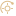
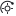

Uma assinatura para o Solar.
O Sol continua no centro. Um traço aberto e dois agentes à sua volta dão à aplicação uma marca própria, com a mesma sobriedade do mapa.
Proposta de identidade · 10 outubro 2026
Prancha interna para rever a marca, a escala e os fundos. O símbolo é uma assinatura; Jarvis mantém o seu corpo 3D. Esta página não é o site público.
Sol aberto · Manrope 550
Fundo claro é um teste de aplicação da marca, sem propor outro tema para a app.
Um Sol. Uma equipa à vista.
O núcleo e os raios mantêm o reconhecimento da identidade existente. O arco interrompido e os pontos de equipa distinguem a assinatura. Sem outro mascote, sem glow e sem textura para competir com os agentes.


Reconhecível em tamanho real.
O símbolo reduzido elimina detalhe. Bandeja e favicon precisam de desenho próprio; o completo começa nos 32 px. Os exemplos abaixo são apresentados sem ampliar.

16 px
As versões nativas Windows e Android precisam ainda de exportação e verificação no sistema.
O mundo Solar fica.
Campo escuro, texto nítido e luz dourada contida. A identidade amplia o sistema que já existe na aplicação; as cores dos planetas continuam a identificar os seus materiais.
#050607#15191f#ddbd89#f2f3f5#a1a7b3- Nome claro
Solar é a aplicação. Jarvis é o agente principal do workspace. Um nome de produto consistente no PC, no Android e no suporte.
- Espaço livre
Manter à volta do símbolo pelo menos um raio do núcleo. Não esticar, fechar o arco ou acrescentar rosto e efeitos.
- Precisão
Mostrar estados e limites reais. Um motor detetado não é um login confirmado; um custo desconhecido não é zero.
- Conteúdo primeiro
O mapa, a tarefa e o resultado dão personalidade. A marca assina o trabalho sem competir com ele.
Uma voz capaz e concreta.
Português europeu e inglês, com ações claras e explicações que ajudam a continuar.
O teu trabalho, com uma equipa de agentes à vista.
Coordena agentes no PC e acompanha as conversas no Android.
Your work, with a team of agents in view.
Coordinate agents on your PC and follow conversations on Android.
Fontes de revisão.
SVG vetoriais transparentes. O wordmark desta prancha usa Manrope local. A disponibilidade do nome e a semelhança com outras marcas precisam de revisão antes da publicação.